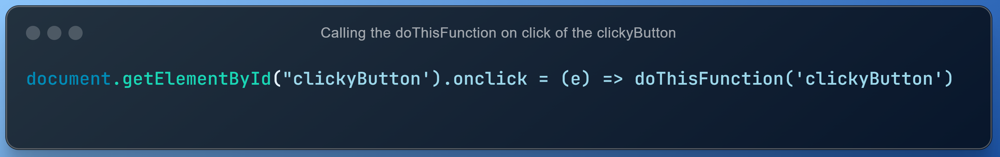
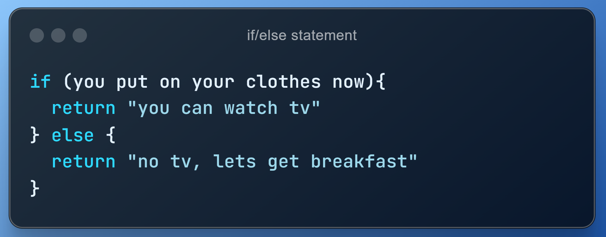
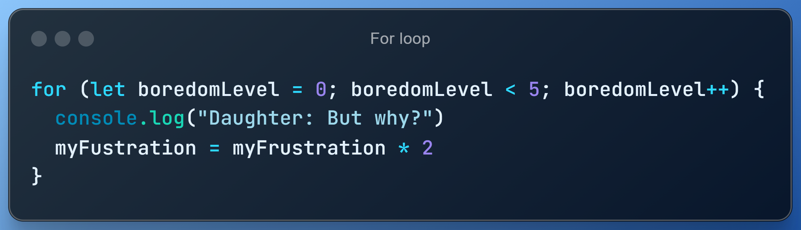

HTML, CSS and javascript are all used on a website for different purposes. HTML creates the content (what text, headings, images and links should be on the page) and CSS controls the layout and design. Javascript manipulates the website, changing the HTML on the page as you interact with it. Javascript is able to do so because of the document object model (DOM). The DOM changes all HTML elements into objects, which have functions and properties that javascript can access to use to manipulate what is on the webpage. We can see behind the scenes and look at what the DOM is doing (and change it ourselves in real time!) with browser developer tools.
This html code is for the button below. As you can see, the white
code is what the button element says on it (Click).
The writing after the green id= (clickyButton) is a unique name for
this button. No other buttons or any other items on this website are
called clickyButton.
The code after the class= (black-button) is to make the button look
nice with CSS. Many buttons or other items can have the same class
and look like black-button.
This is the CSS which decides how the button looks. It sets the button to have a black background and blue foreground (blue text).
Now lets look at Javascript, so that the button will do something! When your browser loads the webpage, the whole page is turned into a document object model so that javascript can interact with the HTML and change things. We can use javascript with clickyButton’s id to find clickyButton in the document object. The DOM provides us with a document function named getElementById which we can use for this. We only want the button to do something if we click on it. We can use the onclick() function for this.
Now when we click the button, clickyButton will call and run the doThisFunction(). Read all about the doThisFunction below, then decide whether you want to click it.
This is the code for doThisFunction(buttonId). To work, it needs an argument of a String of the id for the button. It also needs a globally declared audio Object with the name scaryAudio. The code sets out that innerHTML will replace the text on the button. Computers read code from the top down, calling each function as they go, then action it, unless this is changed by conditionals or loops. This is called control flow. Therefore in the doThisFunction, we will never see that the button says "Hello, this is a pretty flower!" because the computer immediately rewrites the text with "Stand by for world annihilation..." before we can see it. Sooooo... do you think you should press the button?
Functions are (mostly) self-contained code that do one thing. They can take in information through the argument (the brackets after the name of the function), and can return information to the rest of the code. They can also access global variables (variables declared outside of functions). Functions are useful because they simplify code by decreasing repetition. For example, I could use this function with different buttons so that they all do the same thing. As functions are mostly self contained, they can help you narrow down where any problems are.
 When a computer reads a piece of code, it starts at the top of the document and works its way down, line by line, to the bottom, except when we change the order by putting functions or loops or conditionals. When a function is called, the computer will down the document to that function and read it, line by line, then go back up to where it was before. We can tell the computer to skip bits of code with conditionals such as 'if/else' statements. Conditionals are options for the computer based on what is true or false. This morning, I told my daughter that if she put on her clothes, I'd let her watch TV. If not, she would go straight to breakfast in her pjs without watching TV . She put on her clothes, at which point the if statement was true and we watched TV. The 'else' was skipped because the 'if' was true.
 Loops also control the flow of a computer reading code. They tell a computer to do one particular thing over and over again until it has completed that thing a designated amount of times. Compare it to the why game. My daughter loves the why game. When she starts the game (on initilization) my daughter is not bored. Her boredom level is at 0. She will get generally get bored after about 5 repetitions. So while her boredom level is at less than 5, she will keep looping/playing. Every time she asks 'why' she gets one level more bored with the game.
For loops are extremely useful in accessing all of the information in arrays, because the items in an array are accessed by their index number.
Arrays and Objects are both types of variables. They're both used to store sets of data.
Arrays are a bit like a shopping list or a to-do list Each piece of data in the array has an index number, like the numbers on a list. This numbering starts at 0 instead of 1.
Objects store data in key/value pairs. For example, for an object called painting, a key could be 'artist' and the value 'Picasso'. Objects don't have an index, therefore we can't use a for loop to access information as we do an array. We need to use a for... in loop instead. Object keys are always a String, however their pairs can be another type of data such as number/array/or an object.